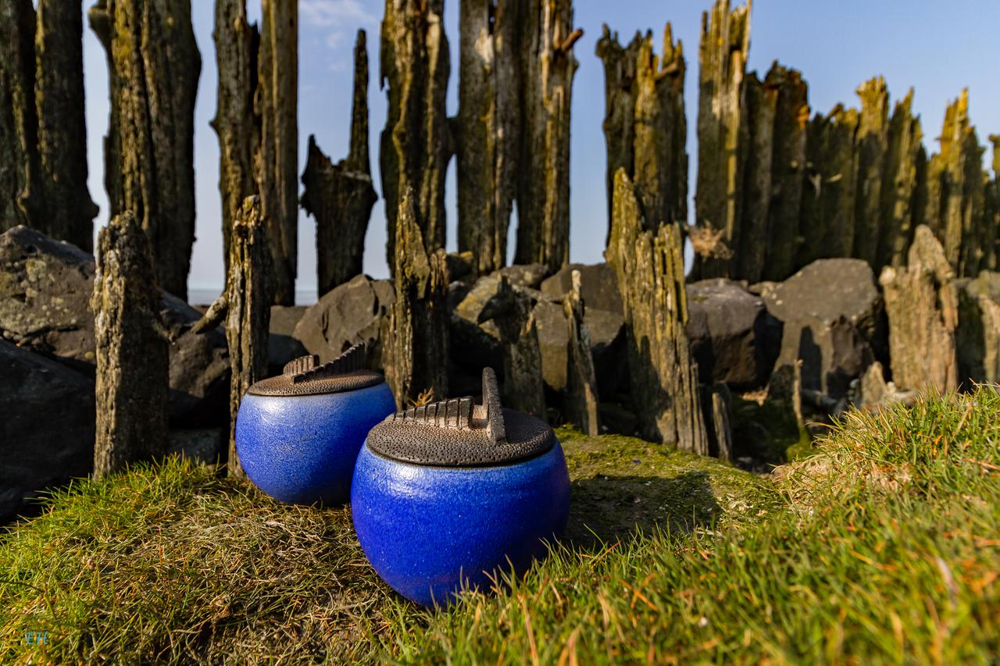

Wad van West tot Oost - 9 juli tot 10 september 2016
Van 9 juli tot 10 september 2016 is in het Mienskipshûs Doarpstsjerke Metslawier de expositie “Wad van West tot Oost”. Een expositie bestaande uit foto’s en keramiek rond het thema Wadden. Er is werk te zien van fotograaf Emile Huijskes en keramiek van Rinske Reijn. Het werk van deze kunstenaars is nog niet eerder te zien geweest in Fryslân en is zeker het bekijken waard.
Emile Huiskes uit Zoutkamp is de laatste 6 jaar intensief bezig met fotografie en wordt geïnspireerd door het Wad, het Lauwersmeer en de natuur “an sich”. Inmiddels heeft hij al verschillende keren geëxposeerd bij Staatsbosbeheer en het gemeentehuis van de Marne in Leens. Er worden ook regelmatig foto’s opgenomen in het blad van het nationaal park Lauwersmeer. De foto’s die tijdens de expositie te zien zijn, nemen u mee langs de noordelijkste rand van Nederland van West Friesland tot aan Borkum.
Keramiste Rinske Reijn woont sinds 2000 in Leens. Het Waddenlandschap met in het bijzonder het Lauwersmeergebied zijn inspiratiebronnen voor haar gedraaide kommen, potten en schalen. Ze maakt raku-gestookt keramiek met daarop handgevormde decoraties op een elektrische draaischijf.
Voor het bezoeken van de expositie kunt u terecht in het Mienskipshûs Doarpstsjerke Metslawier op zaterdag en zondagmiddag van 13:30 tot 17:00 uur.